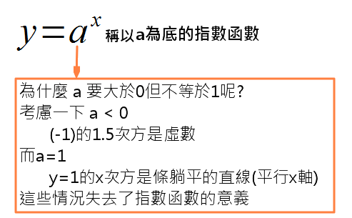
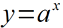
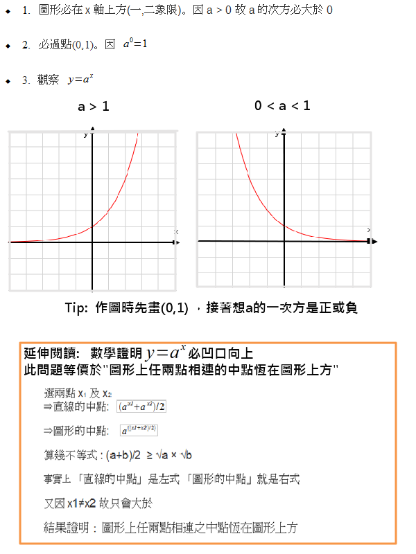
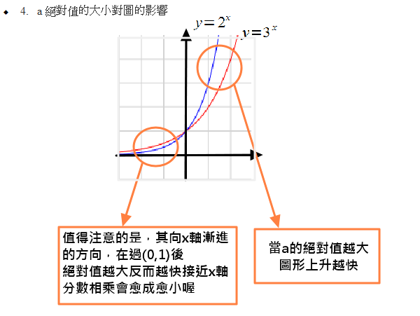
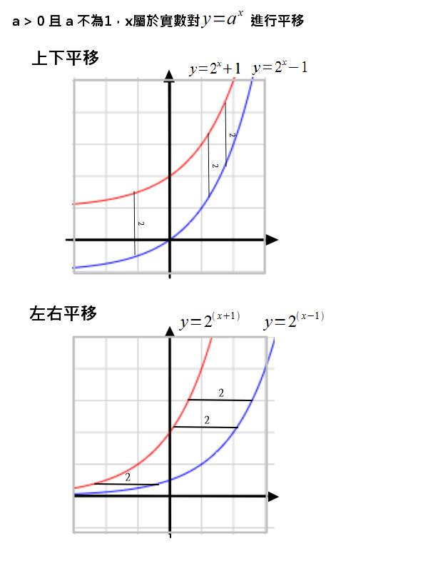

定義
a > 0 且 a 不為1，x屬於實數，滿足以上條件的話

性質
a > 0 且 a 不為1，x屬於實數 的指數函數性質。這些性質在我們做圖及解高中數學題時常用到


平移

底數大小對圖形的影響
以下為 y = a^x 的函數圖形，圖中紅色的小點可用手移動，上下移動(Y座標改變)可改變 a 值
將紅點於 0.5 至 1.5 的區間中移動，我們可以輕易的統整出以下結論
- a值越大，函數圖形坡度越陡(增長較快)
- a等於1時，圖形幾乎為一平行線
- a大於1時，圖形向左凹
- a小於1時，圖形向右凹
- a小於0時，圖形不存在
標準式
通常，我們會把對數函數假設為

其中，h代表 x 軸的位移，k 代表 y 軸的位移。
對數函數的平移
圖中為的圖形，其中a = 2
紅色小點的 X 座標為 h，Y座標為 k，請嘗試移動紅色小點，觀察圖形平移的結果